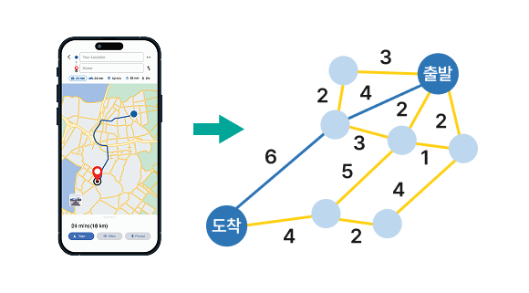

심화
사고 다지기
1-3. 탐색 알고리즘
다음 글을 읽고 질문에 답해 보자.
내비게이션 시스템은 최단 경로를 어떻게 찾을까?
내비게이션 시스템은 탐색 알고리즘을 활용하는 대표적인 사례 중 하나이다. 이때 우리가 학습한 순차 탐색이나 이진 탐색이 아닌 그래프를 기반으로 한 최단 경로 탐색 알고리즘을 사용한다.

데이터가 순서대로 나열되는 경우에는 순차 탐색이나 이진 탐색이 적합하지만,
도로망 정보는 그래프 형태로 표현되므로 최단 경로 알고리즘이 적합하기 때문이다. 내비게이션 시스템은 그래프의 정점(지역)과 간선(도로) 정보를 이용하여 출발지에서 목적지까지의 이동 거리나 시간을 최소화하는 방법을 찾는다.
일상생활에서 최단 경로 알고리즘을 적용할 수 있는 사례와 그 사례에서 알고리즘을 적용하는 목적을 적어 보자.
예시
• 지도 앱의 지하철 환승 경로 검색 기능: 최소 환승 경로나 최저 비용 경로를 찾는다.
• 로봇 청소기: 장애물을 피해 청소 구역을 효율적으로 이동하는 경로를 찾는다.
• 게임의 AI 캐릭터: 게임 맵에서 플레이어를 피하거나 찾을 때 효율적으로 이동하는 경로를 찾는다.
• 로봇 청소기: 장애물을 피해 청소 구역을 효율적으로 이동하는 경로를 찾는다.
• 게임의 AI 캐릭터: 게임 맵에서 플레이어를 피하거나 찾을 때 효율적으로 이동하는 경로를 찾는다.